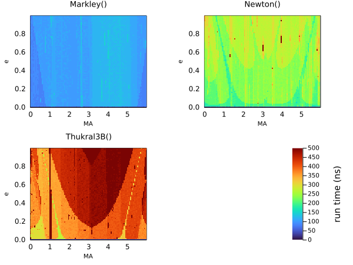
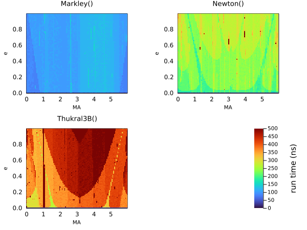

Kepler Solvers
The heart of this package is being able to take a set of Keplerian elements and output relative positions, velocities, etc.
This normaly requires solving Kepler's equation numerically. This package supports a multitude of solver algorithms that can be passed to orbitsolve:
The last of these RootsMethod, allows one to substitute any algorithm from the Roots.jl package. These include many different classical and modern root finding algorithms.chosen precision, including artibrary precision BigFloats. Using big floats with, for example, Roots.PlanetOrbits.Thukral5B and a tight tolerenace, allows you to solve orbits up to arbitrary precision.
The default choice is Auto, which currently selects Markley for all cases. The Markley algorithm is very fast, reasonably accurate, and always converges, making it a good default choice.
The Markley algorithm is a tweaked version of the algorithm from AstroLib.jl. It is non-iterative and converges with less than 1e-15 relative error across the full range of e between 0 and 1. On my laptop, this solves for a single eccentric anomaly in just 71 ns. Since it is implemented in pure Julia, there is no overhead from calling into a C or Cython compiled function and no need for vectorization.
Examples
using PlanetOrbits, BenchmarkTools
orb = orbit(a=1.2, e=0.1, M=1.0, ω=1.4, τ=0.5)
t = mjd("2025-06-23")
@benchmark orbitsolve(orb, t, PlanetOrbits.Markley())BenchmarkTools.Trial: 10000 samples with 228 evaluations.
Range (min … max): 327.193 ns … 16.119 μs ┊ GC (min … max): 0.00% … 97.40%
Time (median): 355.268 ns ┊ GC (median): 0.00%
Time (mean ± σ): 380.614 ns ± 355.613 ns ┊ GC (mean ± σ): 1.92% ± 2.17%
▅ █▃
█▂▂▂██▃▄▅▃▄▂▂▂▂▃▂▁▁▁▁▁▁▁▁▁▁▁▁▁▁▁▁▁▁▁▁▁▁▁▁▁▁▁▁▁▁▁▁▁▁▁▁▁▁▁▁▁▁▁▁ ▂
327 ns Histogram: frequency by time 666 ns <
Memory estimate: 112 bytes, allocs estimate: 1.@benchmark orbitsolve(orb, t, PlanetOrbits.Goat())BenchmarkTools.Trial: 10000 samples with 10 evaluations.
Range (min … max): 1.120 μs … 27.221 μs ┊ GC (min … max): 0.00% … 0.00%
Time (median): 1.140 μs ┊ GC (median): 0.00%
Time (mean ± σ): 1.210 μs ± 417.408 ns ┊ GC (mean ± σ): 0.00% ± 0.00%
█▇▄▂ ▁▁▁▁ ▁▄▅▄▃ ▃▁ ▂
▇████▁█████▁█▇▄▆▅▁▄▄▃▄▄▁█████▁████▆▁▅▆▅▅█▁██▇▇▅▁▆▅▅▄▅▁▄▆▅▅▆ █
1.12 μs Histogram: log(frequency) by time 1.61 μs <
Memory estimate: 112 bytes, allocs estimate: 1.using Roots
@benchmark orbitsolve(orb, t, PlanetOrbits.RootsMethod(Roots.Newton()))BenchmarkTools.Trial: 10000 samples with 200 evaluations.
Range (min … max): 404.505 ns … 18.072 μs ┊ GC (min … max): 0.00% … 96.97%
Time (median): 440.010 ns ┊ GC (median): 0.00%
Time (mean ± σ): 472.207 ns ± 437.787 ns ┊ GC (mean ± σ): 1.79% ± 2.17%
▁ █
█▂▂▁█▅▄▄▁▂▂▄▄▃▂▁▁▁▁▁▁▁▁▁▁▁▁▁▁▁▁▁▁▁▁▁▁▁▁▁▁▁▁▁▁▁▁▁▁▁▁▁▁▁▁▁▁▁▁▁▁ ▁
405 ns Histogram: frequency by time 850 ns <
Memory estimate: 112 bytes, allocs estimate: 1.using Roots
@benchmark orbitsolve(orb, t, PlanetOrbits.RootsMethod(Roots.Thukral3B()))BenchmarkTools.Trial: 10000 samples with 195 evaluations.
Range (min … max): 489.749 ns … 35.999 μs ┊ GC (min … max): 0.00% … 0.00%
Time (median): 530.774 ns ┊ GC (median): 0.00%
Time (mean ± σ): 578.491 ns ± 679.769 ns ┊ GC (mean ± σ): 1.67% ± 2.16%
▂ █
█▃▄▂█▆█▃▃▃▄▄▃▂▂▂▂▂▂▂▂▂▂▂▂▂▂▂▂▂▂▂▂▂▂▂▂▂▂▂▂▂▂▂▂▂▂▂▂▂▂▂▂▂▁▂▂▂▂▂▂ ▂
490 ns Histogram: frequency by time 1.03 μs <
Memory estimate: 112 bytes, allocs estimate: 1.@benchmark orbitsolve(orb, t, PlanetOrbits.RootsMethod(Roots.A42()))BenchmarkTools.Trial: 10000 samples with 9 evaluations.
Range (min … max): 2.611 μs … 25.089 μs ┊ GC (min … max): 0.00% … 0.00%
Time (median): 2.822 μs ┊ GC (median): 0.00%
Time (mean ± σ): 2.869 μs ± 664.867 ns ┊ GC (mean ± σ): 0.00% ± 0.00%
█▆▂▂ ▄█▆▃▂ ▅▃▃ ▂
█████▆█████▇▇█████▇▇███▆█▆▆▅▅▄▄▄▆▅▅▃▄▄▄▃▃▁▃▁▄▅▆▆▇▇█▇▇▇▆▅▆▅▆ █
2.61 μs Histogram: log(frequency) by time 4.3 μs <
Memory estimate: 112 bytes, allocs estimate: 1.@benchmark orbitsolve(orb, t, PlanetOrbits.RootsMethod(Roots.Bisection()))BenchmarkTools.Trial: 10000 samples with 10 evaluations.
Range (min … max): 1.720 μs … 22.450 μs ┊ GC (min … max): 0.00% … 0.00%
Time (median): 1.860 μs ┊ GC (median): 0.00%
Time (mean ± σ): 1.952 μs ± 641.061 ns ┊ GC (mean ± σ): 0.00% ± 0.00%
▇▂▃▆█▃▃ ▅▅▂ ▁▁ ▂
███████▇▆██████▇█▇▇▆▆▅▄▄▃▁▄▁▁▃▃▃▄▆▆▆▆▆▇▆▆▅▆▄▄▃▄▄▄▃▃▁▅▁▄▁▃▁▅ █
1.72 μs Histogram: log(frequency) by time 3.77 μs <
Memory estimate: 112 bytes, allocs estimate: 1.@benchmark orbitsolve(orb, t, PlanetOrbits.RootsMethod(Roots.SuperHalley()))BenchmarkTools.Trial: 10000 samples with 200 evaluations.
Range (min … max): 404.005 ns … 32.413 μs ┊ GC (min … max): 0.00% … 0.00%
Time (median): 440.005 ns ┊ GC (median): 0.00%
Time (mean ± σ): 471.381 ns ± 534.298 ns ┊ GC (mean ± σ): 1.91% ± 2.17%
▁ █
█▃▂▂▂█▃▄▄▂▂▁▃▃▃▂▁▁▁▁▁▁▁▁▁▁▁▁▁▁▁▁▁▁▁▁▁▁▁▁▁▁▁▁▁▁▁▁▁▁▁▁▁▁▁▁▁▁▁▁▁ ▁
404 ns Histogram: frequency by time 800 ns <
Memory estimate: 112 bytes, allocs estimate: 1.@benchmark orbitsolve(orb, t, PlanetOrbits.RootsMethod(Roots.Brent()))BenchmarkTools.Trial: 10000 samples with 49 evaluations.
Range (min … max): 879.612 ns … 78.350 μs ┊ GC (min … max): 0.00% … 98.05%
Time (median): 993.878 ns ┊ GC (median): 0.00%
Time (mean ± σ): 1.041 μs ± 1.189 μs ┊ GC (mean ± σ): 0.74% ± 0.98%
▅▂▆▇▇█▅▇▅▄▁▁ ▁ ▂
█████████████▇██████▇▇▄▃▄▅▄▃▄▃▁▇▄▁▃▁▁▃▅▄▆▆▆▄▁▁▄▃▄▄▅▄▄▄▄▅▅▅▄▅ █
880 ns Histogram: log(frequency) by time 2.1 μs <
Memory estimate: 112 bytes, allocs estimate: 1.@benchmark orbitsolve(orb, t, PlanetOrbits.RootsMethod(Roots.Order2()))BenchmarkTools.Trial: 10000 samples with 193 evaluations.
Range (min … max): 507.777 ns … 19.744 μs ┊ GC (min … max): 0.00% … 96.69%
Time (median): 552.860 ns ┊ GC (median): 0.00%
Time (mean ± σ): 588.839 ns ± 487.020 ns ┊ GC (mean ± σ): 1.27% ± 1.93%
█
▇▂▂▂▁█▅▅▅▂▂▂▃▃▂▁▁▁▁▁▁▁▁▁▁▁▁▁▁▁▁▁▁▁▁▁▁▁▁▁▁▁▁▁▁▁▁▁▁▁▁▁▁▁▁▁▁▁▁▁▁ ▁
508 ns Histogram: frequency by time 969 ns <
Memory estimate: 112 bytes, allocs estimate: 1.@benchmark orbitsolve(orb, t, PlanetOrbits.RootsMethod(Roots.AlefeldPotraShi()))BenchmarkTools.Trial: 10000 samples with 9 evaluations.
Range (min … max): 2.489 μs … 213.547 μs ┊ GC (min … max): 0.00% … 0.00%
Time (median): 2.689 μs ┊ GC (median): 0.00%
Time (mean ± σ): 2.839 μs ± 2.461 μs ┊ GC (mean ± σ): 0.00% ± 0.00%
▄▁ ▆█▄▃▁ ▃▅▂▁ ▁
██▆▃▁█████▇▆████▇▇██▆▇▇▇▅▅▅▅▄▁▄▄▅▃▄▄▄▄▃▄▄▁▆▅▅▅▅▅▄▅▅▅▆▃▃▁▁▃▄ █
2.49 μs Histogram: log(frequency) by time 4.41 μs <
Memory estimate: 112 bytes, allocs estimate: 1.High precision
You can solve Kepler's equation in high precision using big floats and tightening the tolerance on the solver.
orb_big = orbit(a=big(1.2), e=big(0.1), M=big(1.0), ω=big(1.4), τ=big(0.5))
sol = orbitsolve(orb_big, big(t), PlanetOrbits.RootsMethod(Roots.Thukral5B(),rtol=1e-30,atol=1e-30,))
radvel(sol)18238.74783586164058110436412157446724913271569356796169848820891801965891606768Comparison
 
